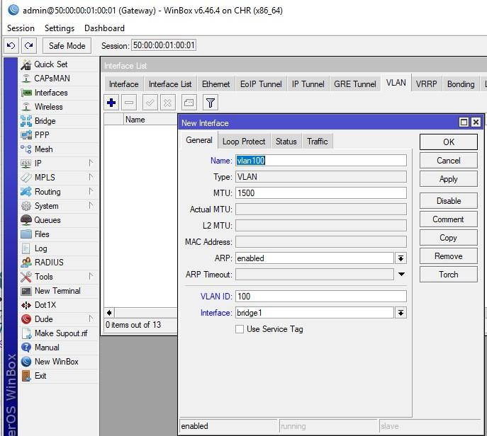
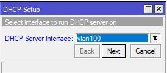
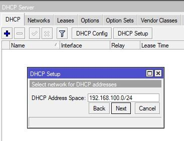
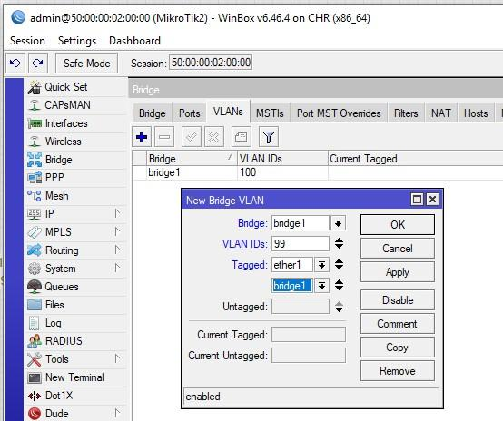
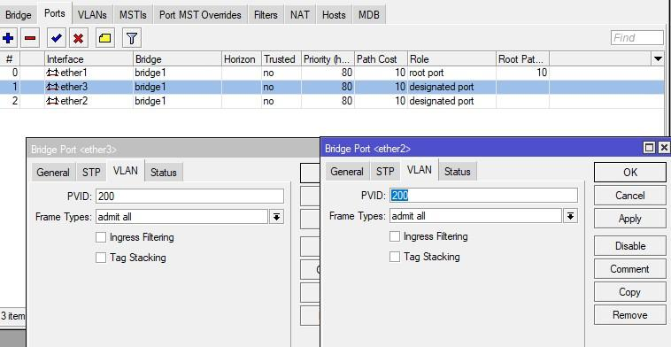
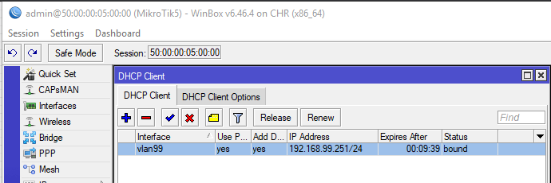

Самая непонятная, сложная и странная тема в нашем обзоре – настройка VLAN на Mikrotik. Вы можете найти миллион статей в интернете, но как на зло, ни одна из них не объяснит, как же все-таки настраивается эта технология. Честно признаться, я сам иногда задумываюсь «Как же устроен мозг того разработчика, который реализовал это именно таким образом?».
На курсах Mikrotik не особо уделяют этому время (понять можно, за 3-ех дневной тренинге роутинга особо не расскажешь про данную технологию), и в большинстве случаев, не сразу улавливаешь суть. В голове простого человека сразу же начинают возникать кучу вопросов – как? откуда? Кто роутер? Кто свитч? и т.д. Подливает масло в огонь следующее – реализация отличается на разных железках. «Куда мир катится?» — и я с вами соглашусь. Существует 2 способа реализации на трех типах устройствах. Но обо всем по порядку.
Содержание
VLAN – виртуальная локальная сеть, которая реализуется на роутерах и свитчах на втором уровне модели OSI путем расширения стандартного кадра Ethernet 4-ех байтовым полем. 3 бита выделены под Priority, 1 под CFI и 12 бит на VID.
VID – это VLAN ID, идентификатор который может принимать до 4096 значений. В отличие от устройств компании, чье название начинается с Cisco, на Mikrotik можно задавать любое значение от 0 до 4095. Т.е. эта та штука, которая делит одну плоскую широковещательную сеть на разные.
Если вы хотите углубить свои знания по работе с роутерами MikroTik, то наша команда рекомендует пройти курсы которые сделаны на основе MikroTik Certified Network Associate и расширены автором на основе опыта . Подробно читайте ниже.
Порты – существует 2 вида в понятии Mikrotik. Tagged и Untagged. Или проще говоря Tagged – транковые или же uplink, смотрящие на роутеры и свитчи. Untagged – порты доступа (принтеры, компьютеры, серверы) т.е. оконечные устройства.
Ранее я говорил, что есть два вида реализации на трех типах устройств. Первая – программная реализация она везде одинакова и настраивается в bridge, вторая – аппаратная. В первом случае, обработка трафика идет через центральный процессор, во втором – обработкой трафика занимается свитч чип. Но в свитчах 3XX серии настройка именно через меню Bridge.
Из-за того, что чипов много и разных, существуют 3 подхода к реализации:
Важный нюанс. С версии прошивки 6.41 изменился подход к реализации. Абсолютно все устройства настраиваются через Bridge. Появилось понятие Hardware Offload – аппаратная разгрузка, означает, что трафик обрабатывается свитч чипом, а не процессором. Параметр выставляется при добавлении порта в бридж. Но если вы имеете в вашей схеме сети в качестве роутера Hap Lite, hAP AC lite или любое устройство из первого и второго пунктов, а также не планируется на этом же устройстве делать порты доступа, создавать и добавлять порты в бридж не нужно.
Вышесказанное может сбить с толку. В первом и втором типе, порты нужно добавлять в Bridge, а настраивать в меню Switch. Но если у вас один порт, который используется для tagged трафика, то добавлять не нужно, просто вешаете на него VLAN-ы. Здесь подразумевается, что это устройство скорее всего роутер. Но если вы добавили все порты в Bridge, и настраиваете в меню Bridge, то вы отключите HW Offload и задействуется ЦП. В третьем типе, все настраивается в Bridge и это будет аппаратная реализация.
Всегда следите за аппаратной разгрузкой, если вы включили функционал, который не поддерживается чипом, разгрузка выключится и трафик побежит через процессор.
В данной инструкции мы остановимся на свитчах третьей серии и будем настраивать Mikrotik VLAN через Bridge для нескольких сценариях:
Мы имеем:
Роутер на то и роутер чтобы управлять трафиком через firewall. Но мы не будем настраивать правила фильтрации в данной статье. Так же у нас не будет включена Hardware Offload т.к. мы используем лабораторный стенд и отсутствуют какие-либо чипы коммутации. Чипы коммутации отсутствуют на RouterBoard серии CCR и виртуалок CHR. Первым делом создадим bridge и добавим в него ether2-5.
На вкладке VLANs укажем сети.
Согласно схеме коммутации, у нас есть ПК в VLAN100 за Mikrotik2, Mikrotik4, Mikrotik5, в связи с этим указываем соответствующие Tagged интерфейсы. Добавляем бридж в бридж, это так сказать некий порт, между роутером и сетью который позволяет понимать трафик в определенном VLAN. Проделываем аналогично для 200-ой сети.
Далее настроим сеть управления, в которой будут коммутаторы и роутер, а также ПК VPC7.
«Почему так?» —спросите вы. Потому что данный тег нужно передавать на все коммутаторы, чтобы ими управлять, принимая его на устройствах.
Далее создадим VLAN интерфейсы и укажем на них адреса. В Interfaces создадим новый указав понятное название и VID. Обязательно указываем bridge1, т.к. повесить метку на физический интерфейс не получится, в связи с тем, что он находится в slave режиме (зависит от bridge).

Создаем по аналогии для меток 200 и 99.
Далее задаем адреса на интерфейсы:
По аналогии добавляем адреса для сетей 200 и 99 выбрав соответствующее интерфейсы.
Все что мы сделали выше – подготовительные работы. Еще ничего не работает, метки не бегают, адреса фейковые. Обязательно все перепроверим и только после этого, открываем свойства bridge1 и включаем VLAN Filtering. Все начинает работать, до этой галочки – нет.

Сохраняем и перейдем к созданию DHCP серверов для Vlan сетей на нашем микротике Открываем IP – DHCP Server и жмем DHCP Setup.
Выбираем интерфейс, на котором будет работать служба DHCP.

На следующем шаге ничего не меняем.

Следом необходимо указать шлюз. В данном случае будет 192.168.100.1
Далее нам предлагают указать выдаваемый пул адресов.
DNS-сервер. В нашей инсталляции будет свой на каждый VLAN, т.е. 192.168.100.1. Если у вас уже есть DNS сервера, можете указать их.
И последнее – время аренды. Оставим по умолчанию.
После создания проверим, на верном ли интерфейсе у нас работает служба.
По аналогии создаем для 200 и 99.
На этом базовая настройка шлюза завершена.
Настройка VLAN100, все порты подключены в него.
Согласно нашей схеме, нам нужно принять два тега: 100 и 99. Первый для ПК, второй для управления самим коммутатором (service tag). Создадим bridge.
Добавим в него tagged ether1.
Untagged ether2, ether3. Указав PVID 100 на вкладке VLAN.
Переходим в вкладку VLANs бриджа. Указываем тегированные и не тегированные порты. В нашем случае tagged ether1, untagged ether2 и ether3.
Добавляем VLAN для управления.

Перепроверив, включаем фильтрацию.
Далее нужно получить адрес из сети управления.
Повесим DHCP-Client на него.
После чего мы удачно получили адрес.
Далее нам нужно включить наши ПК и проверить какие адреса мы получили на них.
Настройка VLAN200, все порты подключены в него.
Настройка будет аналогична предыдущему примеру, за исключением номеров тэгов. В бридже на интерфейсах доступа укажем PVID 200.

Укажем порты и сеть управления.
После, создаем интерфейс в Interfaces, вешаем на бридж и включаем DHCP-Client.
Включаем ПК и принимаем адреса.
Проверим связь между VPC4 и VPC1
В предыдущих двух примерах мы настраивали свитчи только под определенные метки. А что, если на одном свитче живут разные сети. После создания бриджа на этапе добавления интерфейсов нужно указать соответствующее PVID. В нашем случае ether2 – 100, ether3 – 200.

Настраиваем порты.
Не забываем включить фильтрацию и проверим что коммутатор получил адрес из нужной сети.
Включим рабочие станции.
Ну и напоследок представим, что в одном коммутаторе доступа есть ПК административного персонала, за которыми работают администраторы, а также обычные пользователи. Посмотрим на PVID для интерфейсов.
Т.к. нам нужно чтобы ПК администратора VP7 был в одной сети с коммутаторами и роутером, сделаем его untagged.
Получим адрес управления.

Включим оба ПК.
Попробуем проверить связь с коммутаторами и ПК.
Взглянем на DHCP сервер.
Далее мы можем создавать interface-list и управлять трафиком через firewall. На этом настройка VLAN Bridge на роутере MikroTik под управлением routeros завершена, спасибо за внимание.